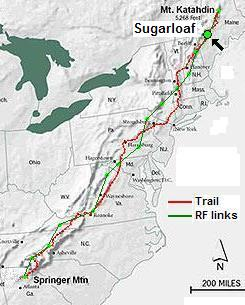
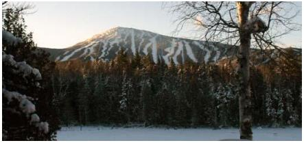

Sugarloaf Mountain APRS Station
Sugarloaf Mountain APRS Station
Sugarloaf Mountain APRS Station2013 Planning: John Tarbox, WA1KLI is again leading the effort this year. He will take the chairlift to the top and then hike to the best operating position. See the summary spread sheet.
2012 Planning: John Tarbox, WA1KLI purchased a D710 so that he has his own radio this year and will be there for the combined GOlden Packet and Scout Operation ON-TARGET on Saturday, 21 July. He will be assisted by David Herrick, WA1BXM.
2011 Success: John Tarbox, WA1KLI lives nearby and so WB4APR mailed him a D7 and twin-lead J pole for this site. The D7 will not digipeat, but John was able to sit there and watch event packets from the south, and from Katahdin to confirm the links work. He also did VOICE contact on the 445.925 coordination channel to Katahdin and Mt Washington, though high levels of RF QRM on Mt Washington made meaningful communications difficult at best. John avoided the 2009 reported high levels of RFI by hiking down from the Sugarloaf peak and operating on the NW ridgeline where he had clear line of sight to Mt Wash and Katahdin. See view). See also Johns 2011 report.
2010 Report: * * * This site was abandoned due to high RF levels and getting access. I do not remember how we heard that info. Whether it was assumed or actually experienced?
Alternate Site: Back in 2009 we considered this alternate Maine Relay site instead.
Sugarloaf Mountain: Although this site is ideally situated between Mount Washington in New Hempshire and the end of the Appalachian Trail at Mount Katahdin, it is too hard to access, and the RF environment is not conducive to weak signal work. This site was abandoned for the 2009 project. APRS maps indicate that there is an APRS digipeater already at this location, KQ1L-7, but it took extraordinary measures to get in place and is not trivial to access for a one-day change of frequency for the event.
ALTITUDE: . . . . . . . . . . . . 4200 feet
POSITION: . . . . . . . . . . . . 4501.89N / 07018.79W
LINK NORTHEAST: . . . . Katahdin
LINK SOUTHWEST: . . . . Mount Washington

REPEATERS:. . . . . . . . . . 146.97 T100
DIGIEATER: . . . . . . . . . . KQ1L-7
TEAM LEADER:. . . . . . . 2009 One volunteer for Maine somewhere: Mark Ford KB1MSA, Bethel, Maine 04217
. . . . . . . . . . . . . . . . . . John Tarbox WA1KLI

 COMMENTS: .
COMMENTS: .
We have gotten word from KQ1L who appears to have lots of APRS and montain top access about the unsuitability of this site.
BACKGROUND: See the Appalachain Trail Golden Packet main page. . The purpose of this event is to field enough amateur radio emergency communications teams on mountain peaks in the Eastern USA to be able to communicate packets and APRS messages from end-to-end of the Appalachian Trail. Normally considered a 2000 mile hike, the RF path is on the order of only 1200 miles and we hope to do this in only 14 hops. We do this to demonstrate our ability to establish long haul packet radio communications links to remote areas which might have their normal communications infrastructure knocked out by natural or man-made disasters.
VOLUNTEERS: We need volunteers for the 15 or so stations along the route, but also it would be nice to get an amateur radio booth at the AT Festival to recruit some hikers into amateur radio. Showing them what we can do with our HT's should have some interest to a few of them. Most day hikers are really into GPS, so why not APRS too? . To sign up as a volunteer anywhere along the trail either contact wb4apr at amsat dot org. or the existing team that you see forming at each site on each of the individual web pages..
Bob, WB4APR
See my other GENERAL page on APRS applications and Ideas on the AT
Return to the APRS HOMEPAGE or SiteMap.
{kind=link}